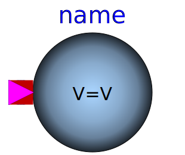

.
Modelica
.
Fluid
.
Vessels
Information
Contents
Name
Description

ClosedVolume
Volume of fixed size, closed to the ambient, with inlet/outlet ports
OpenTank
Simple tank with inlet/outlet ports
BaseClasses
Base classes used in the Vessels package (only of interest to build new component models)
Generated at 2020-06-05T21:39:08Z by
OpenModelica 1.16.0~dev-442-g2e5bc9f